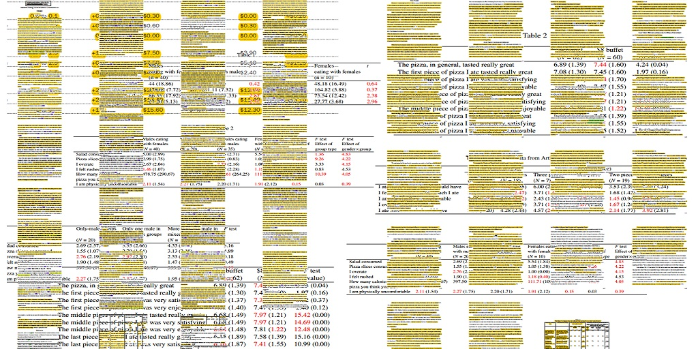

披薩門(*1)：「瞎吃」教主的完美自爆
註1: 本文標題借用哥倫比亞大學統計學教授、知名學術部落客安德魯．蓋爾曼(Andrew Gelman)從2017年1月31號起，在個人部落格對此事件的稱呼(Pizzagate)。早在2016年聖誕節之前，安德魯教授就眉頭一皺，發覺案情並不單純。
如果你是位關心人類飲食習慣研究最新資訊的科普作家，在2016年11月21日看到出版暢銷書「瞎吃」(Mindless Eating: Why We Eat More Than We Think)的康乃爾大學布萊恩．汪辛克教授（Brian Wansink）在個人部落格張貼的文章「永不說“不”的研究生」，應該會想寫篇文章轉述教授與這位研究生的合作成果。轉述內容必定會引用這篇文章提到的論文，以及評論為何一夥人想聚餐吃披薩，總是以吃到飽餐廳做為首選。然而汪辛克教授的首版部落格文章，有幾段文字吸引了近幾年學術圈內惡名昭彰的方法學恐怖份子(methodological terrorists)注意，2017年開始沒有幾天，文章裡提到的四篇論文就被挑出多達150筆錯誤的統計數字。汪辛克看到這篇尚未經同儕審查的論文，完全無法辯解被指出的錯誤，只能在原始部落格文章兩度發佈追加致歉訊息，還有向各方聲明會針對出現錯誤的四篇論文，檢討自己的研究方法與指導學生的方式，並召集人員重新進行核實研究。另一方面，有媒體記者關心近幾年社會科學虛假報告不斷被揭發的爭議，向大學及實驗室公關請求採訪汪辛克本人有關數據為何出錯的細節，汪辛克卻做出出道二十多年以來，首次閃避媒體採訪的舉動。究竟汪辛克在個人部落格說了什麼話而引起這新一波學術爭議？論文中的錯誤怎麼被人挑出來？「方法學恐怖份子」又是何方神聖？
公開示範人為逼出的顯著結果(p-hacking)
汪辛克在部落格文章提到剛發表的五篇論文，是與一位來自土耳其，與他短期合作的研究生，一起分析一批以前在某家義式餐廳收集完成的資料。文章中提到當時他對這位研究生說「收集這些資料花了很多時間與經費，因為這批資料裡可以挖出很多酷玩意，我們應該能做點什麼補救。」(” This cost us a lot of time and our own money to collect. There’s got to be something here we can salvage because it’s a cool (rich & unique) data set.”)。他們的討論過程提到幾個可能的補救方式，也提到如果這位研究生願意出手的話，汪辛克期望看到的分析結果與圖表是什麼模樣(” I told her what the analyses should be and what the tables should look like. I then asked her if she wanted to do them. ”)。
這段說法(現在看起來是不打自招)看在方法學恐怖份子眼裡，馬上察覺這不就是人為逼出顯著結果的標準作業程序？也就是為了得到小於顯著水準的p值，資料分析過程裡不擇手段修改與增減研究資料的一切行為。社會科學–特別是社會心理學–已經有好幾起受到大眾媒體青睞的主題，起初被發現當成鐵證的原始研究結果，最後被證實是人為過度操作資料分析的產物。像是丹尼爾．卡尼曼(Daniel Kahneman)在暢銷著作《快思慢想》（Thinking, Fast and Slow）引用約翰．巴赫(John Bargh)的老年化促發(Elderly Priming)，因為這一系列的相關論文報告列出的多數p值恰好接近顯著水準(比如0.04)，已被專業統計方法認證是人為逼出的顯著結果。
統計數據錯誤太多而導致的胃食道逆流(Statistical heartburn)
兩位荷蘭博士生，提姆．凡迪利(Tim van de Zee)與尼克．布朗(Nick Brown)，加上一位美國的統計學家喬丹．安那亞(Jordan Anaya)決定合作破解這些論文是不是人為逼出顯著結果的謎題。尼克．布朗與其指導教授在2016年於社會心理與人格科學(Social Psychological and Personality Science)發表一篇論文，介紹偵測心理學論文中報告的平均值，與其報告的樣本數不一致程度的方法：GRIM測試。喬丹將GRIM測試結合網路爬蟲程式，開發出可探勘大量文獻並挑出錯誤的應用軟體。看了汪辛克的部落格文章之後，他們與提姆決定要好好檢視汪辛克列出的其中四篇論文，因為他們研判這四篇的資料來源應該是同一家餐廳的現地實驗(Field Experiment)。
在2017年1月27日公開尚未經同儕審查的手稿，三人簡述曾向汪辛克主持的實驗室索取原始資料，卻被婉拒的過程。這個轉折之後，三人決定使用手邊能運用的壞科學探測器(Bad Science Detectors)(*2)檢查論文之中的數據。除了喬丹開發的程式，還有荷蘭蒂爾堡大學的博士生蜜雪兒．諾特(Michele Nuijten)開發，用來檢查t分數等統計值是否有計算錯誤的應用程式statcheck。最後，他們從四篇論文挑出150項錯誤，大多數錯誤是圖表中的樣本數與正文報告的樣本數兜不攏，還有同一筆資料在不同表格列出的平均值與樣本數彼此不一致。如果讀者是在大學裡教統計的老師們，甚至是在中小學教數學的老師們，看到幾十頁的數據和圖表充滿這樣的錯誤，想必都需要趕緊來一錠「吉胃服適」。
註2: 壞科學探測器(Bad Science Detectors)一詞出自英國醫師與科普作家班．高達可(Ben Goldacre)的著作《壞科學》(Bad Science)。有興趣的讀者可參考班．高達可的TED演講。

圖片來源：提姆、凡迪利的個人貼文The Wansink Dossier: An Overview，經提姆、凡迪利同意轉載於此。
方法學恐怖份子從何而來？
提姆、尼克、與喬丹的行動完美揭發虛假科學報告，讓世人減少被虛假科學消息誤導的機會。但是對於像汪辛克等成名已久，習慣傳統社會科學研究模式的學者們來說，這種行徑猶如恐怖行動。普林斯頓大學的資深社會心理學教授蘇珊．費斯克(Susan Fiske)，曾在2016年9月被人發現，本來要發表在心理科學學會(Association of Psychological Science)的學會會員刊物專欄文章裡，草稿曾使用方法學恐怖主義(methodological terrorism)一詞，形容這些公開挑論文數據錯誤、指出某項研究無法再現等非常規學術發表樣態。這項消息見報的時機，也剛好發生蘇珊．費斯克的高徒艾美．柯蒂(Amy Cuddy)的成名作-權力姿勢效應(power posing effect)，其昔日同儕戴娜．卡奈(Dana Carney)公開坦承「權力姿勢效應是虛假的效應」的事件。
艾美．柯蒂曾於2012年在TED演講擺出高權力姿勢的好處，從此成為家喻戶曉的社會心理學教授。事件發生之前一年，其他實驗室發表以比原始研究多出四倍的樣本數，卻無法再現原始研究的結果，接著一系列研究的p值被其他學者使用另一種壞科學探測器P-Curve分析之後，確定是無真正顯著結果的效應，因此造成昔日同儕與艾美．柯蒂分道揚鑣。現在的艾美．柯蒂在美國大眾的形象，有些像南韓世越號事件發生之後的朴瑾惠，有興趣的讀者可留意演講影片下方的討論留言，看到近幾個月要求影片下架與支持艾美．柯蒂的意見相互交鋒。也許那一天發生類似閏蜜門的事件，她從演講權力姿勢效應得到的光環會徹底消失。
科普圈如何面對另類事實
布萊恩．汪辛克與艾美．柯蒂向大眾傳達的資訊，在中文世界，或者至少是台灣的科普圈，依然被多數閱聽者認為是科學事實 。科普文章與專業科學論文一樣，要傳遞的是真實的科學知識。即使是由實驗室裡的科學家，親自面向大眾介紹最新研究成果，讀者也要保持求真的意志，而非以內容夠不夠新奇，傳播者有沒有名氣來判斷內容的價值。
然而這對處於專業科學家與讀者之間的科普作家，將帶來更巨大的挑戰。雖然沒有明確規範，科普作家應當具備比一般讀者更好的批判能力，研判科學成果的真實性，特別是許多作家身兼大學教師或研究生，甚至是第一線科學家的身份。不過現在的事實是，多數中文讀者認識布萊恩．汪辛克與艾美．柯蒂，主要是透過這群科普作家的著作及演講，也因此相信這兩人的研究成果是有助個人生命成長的正面建議。
我並非在此否定這群科普作家的貢獻，只想藉由說明這些事件，提醒現在的中文科普是不是已經來到必須升級的時刻。除了傳達最新的科學知識，科普作家也要負起啟發讀者辨識科學資訊真實性的責任。在個人與群體之間交換資訊的各種場域，許多科普作家應該能預見查核資訊真實性的實際方法無法配合傳達真實知識的理想，而衍生各種問題。要如何掌握與解決這些問題，還需要更多的資訊與討論，不過我相信隨著這類事件不斷浮現，問題的輪廓將越來越清晰。